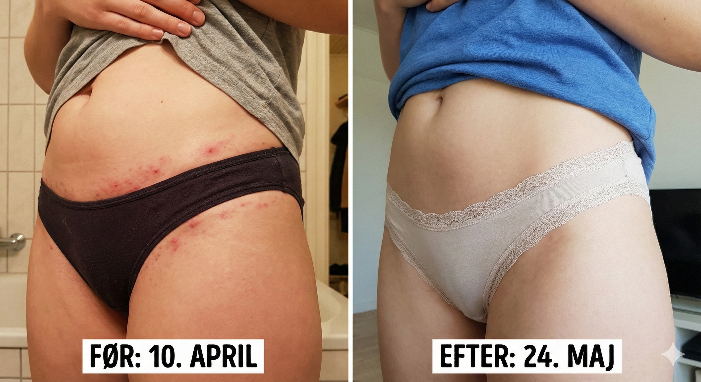

Patenteret gel der holder hud og blad rene for bakterier under barberingen — så din hud slipper for at reagere bagefter.
Ingen binding · opsig med ét klik · pengene tilbage hvis knopperne ikke forsvinder
Uden velkomstgave og uden knop-fri garanti · skraberen betales · standard fragt.
Klinisk studie 2024 · 127 deltagere · 8 uger
| Ingrediens | Hvad den gør | Hvorfor den er her |
|---|---|---|
| Chlorhexidin (patenteret formel) | Holder hud og blad rene for bakterier gennem hele barberingen | Årsagen til knopper er bakterier i mikrosnit — ikke huden |
| Aloe vera | Beroliger og køler huden | Så gelen ikke selv tilfører irritation |
| E-vitamin | Antioxidant der understøtter hudbarrieren | Hud der lige er barberet, er hud der er åben |
| Transparent gel-base | Du ser hvor du barberer; tilstopper ikke bladet | Færre strøg = færre mikrosnit |
Klinisk studie fra 2024 med 127 deltagere over 8 uger: 94 % oplevede færre knopper efter 1–2 barberinger, 92 % ville anbefale ShaveSafe, og 89 % følte sig mere selvsikre. Se studie-resuméet →
Første barbering uden svie. Gelen lægger et antibakterielt skjold, mens du barberer.
Mindre rødme og kløe. De fleste mærker forskel efter 1–2 barberinger.
Eksisterende indgroede hår arbejder sig ud — det kan se værre ud, før det bliver bedre. Det er normalt.
Rolig, jævn hud. Ingen nye knopper, fordi årsagen fjernes ved hver barbering.
Det eneste barberprodukt i Danmark med patent på effekten mod røde knopper og indgroede hår.
127 deltagere over 8 uger. Dokumenteret effekt — ikke et løfte.
Ingen parfume, parabener eller farvestoffer. Skånsom mod selv den mest sensitive hud.
Udviklet og produceret her — sammen med danske dermatologer.
Vi er ikke det pæneste produkt på hylden. Vi er det eneste i Danmark med patent på effekten mod røde knopper og indgroede hår — og det eneste der giver dig pengene tilbage, hvis det ikke virker.
Bladet laver mikroskopiske snit i huden.
“Problemet med barberingsknopper og indgroede hår skyldes bakterier på huden og hårsækkene. Ofte opstår det efter barbering, hvor bladet på skraberen ikke har været rigtig rent. Nybarberede damebikini-snit og nybarberede armhuler er mest udsatte.”
Lise-Lotte Hergel
Praktiserende læge
Mød vores videnskabelige rådgivere →Reelle billeder. Ingen filter. Nana svarer selv, hvis du vil se flere.

“Jeg turde ikke have bikini på. Nu tænker jeg ikke over det.”
“Har kæmpet med knopper på benene i årevis. Væk på en uge.”


“Skægpest hver dag. Første gang i ti år uden røde knopper.”
“Nakke og hals var ét stort udslæt. Nu er det roligt.”
Billeder gengivet med skriftligt samtykke. Resultater varierer fra person til person.
ShaveSafe er det eneste produkt i Danmark med patent på effekten mod røde knopper og indgroede hår. Patentet beskytter den antibakterielle mekanisme — ikke bare en opskrift.
Har du stadig knopper eller indgroede hår efter 3 ugers brug, får du pengene tilbage eller en sensitiv-variant gratis — fordi vi fjerner årsagen under barberingen, ikke symptomet bagefter.
Vi er de eneste i Danmark der giver dig pengene tilbage, hvis det ikke virker.
| ShaveSafe |  Typisk DTC-skraberabonnement Typisk DTC-skraberabonnement |
 Skum + engangsskraber Skum + engangsskraber |
|
|---|---|---|---|
| Patenteret mekanisme mod røde knopper og indgroede hår | |||
| Fjerner bakterier under barberingen (ikke efter) | |||
| Klinisk testet (2024, 127 deltagere) | |||
| Penge-tilbage-garanti hvis knopperne ikke forsvinder | |||
| 0 % parfume / parabener / farvestoffer | |||
| Svensk stål, 5+1 blade | |||
| Udviklet og produceret i Danmark | |||
| Forhandles i Matas og på apoteker | |||
| Opsig med ét klik |
Sammenligning af produktkategorier generelt.
De bruger alle ShaveSafe.


Rigtige portrætter — samtykke på fil. Ingen kendisser, ingen stockfotos.
“Nybarberede damebikini-snit og nybarberede armhuler er mest udsatte for bakterier — derfor giver det mening at ramme årsagen under barberingen.”
— Lise-Lotte Hergel, praktiserende læge
15 år med knopper.Alt afprøvet.Så fandt hun årsagen.
ShaveSafe startede ikke i et laboratorium. Det startede i et badeværelse — med Nana, vores grundlægger, der var træt af at være den kvinde, der altid sagde nej til bikini.
Efter 15 år med indgroede hår, knopper og “sensitive skin”-produkter der ikke virkede, gravede hun ned i forskningen sammen med danske dermatologer og opdagede, hvad ingen af de store brands talte om: det er bakterier, ikke huden.
I dag svarer Nana stadig personligt på beskeder fra kunder.
Det eneste i Danmark med patent på effekten — og det eneste der giver pengene tilbage, hvis det ikke virker.
Læg i kurv — 79 krAltid gratis fragt på abonnement · 14 dages fortrydelsesret